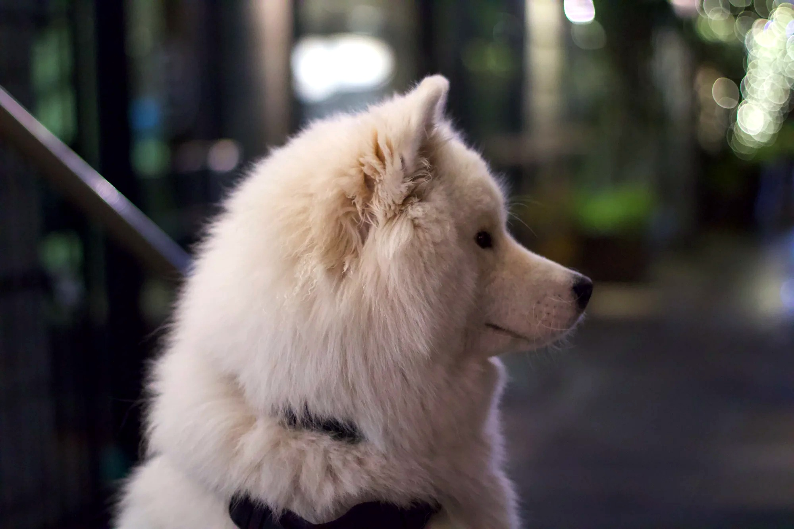

IMG_1190.jpeg
Multi-LLM Analysis
78.0/100
Consensus Score
Original Review
The image features beautiful background bokeh and a charming subject, but the white fur appears grey due to underexposure. Correcting the lighting and cropping out the left-hand distraction will create a much stronger portrait.
- Increase exposure by approximately +0.5 EV and boost the 'Whites' slider to brighten the fur without clipping highlights
- Crop the left side of the image to remove the distracting diagonal railing and place the dog's eye closer to the left vertical third line
- Warm up the white balance slightly to correct the cool, greenish color cast from the street lighting
Strong subject isolation with pleasing bokeh and a clean profile pose, but the overall exposure is slightly dark and the whites feel a bit flat. Targeted tonal shaping and selective detail on the face will improve texture, separation, and perceived sharpness without sacrificing the soft background.
- Increase exposure by about +0.4 EV and lift shadows +15 to reveal more fur detail without blowing highlights.
- Reduce highlights by 10–15 and add a mild S-curve (contrast +8) to keep the white coat textured while improving midtone depth.
- Apply a local adjustment to the face: add clarity/texture +10 and sharpen (amount ~40, radius 0.8) while masking to avoid sharpening the background bokeh.
Analysis failed: Error code: 400 - {'type': 'error', 'error': {'type': 'invalid_request_error', 'message': 'messages.0.content.0.image.source.base64.data: Image does not match the provided media type image/jpeg'}, 'request_id': 'req_011CWq4YZc6W18eUc2Fqn6F7'}
Combined Improvements Applied:
- Increase exposure by approximately +0.5 EV and boost the 'Whites' slider to brighten the fur without clipping highlights
- Crop the left side of the image to remove the distracting diagonal railing and place the dog's eye closer to the left vertical third line
- Warm up the white balance slightly to correct the cool, greenish color cast from the street lighting
- Apply a radial gradient or brush to the dog's eye to slightly increase exposure and sharpness
- Increase exposure by about +0.4 EV and lift shadows +15 to reveal more fur detail without blowing highlights.
- Reduce highlights by 10–15 and add a mild S-curve (contrast +8) to keep the white coat textured while improving midtone depth.
- Apply a local adjustment to the face: add clarity/texture +10 and sharpen (amount ~40, radius 0.8) while masking to avoid sharpening the background bokeh.
Before & After Comparison